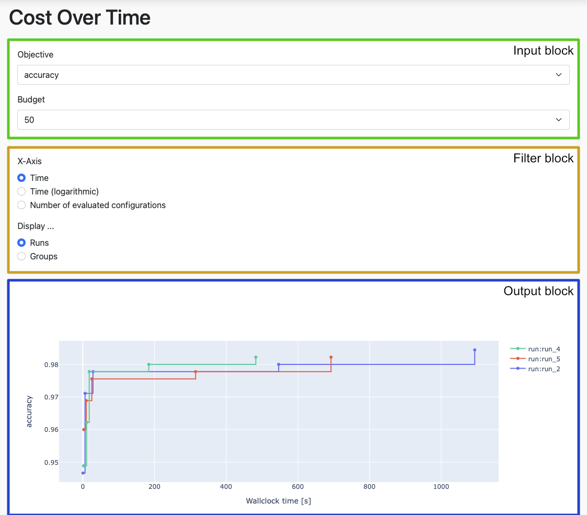

Plugins¶
Plugins are used to display data in a specific way. There are plugins to analyse the performance, the hyperparameters and the budgets. Since AutoML runs are multi-dimensional, the plugins provide a way to look into specific aspects more detailtly.
The goal of the plugins are to provide a way to visualize the data in a way that is easy to understand. It should give you more insight both data and model-wise and can serve as an additional sanity check.
Structure¶
The plugins in DeepCAVE are structured in a specific way. Basically, three blocks are used:
Input block
Filter block
Output block
The input block is used to trigger new calculations. For example, when you change the objective in the input block, a new calculation is triggered and cached. The next time you use the same input data, no new calculation is needed as the data is already cached. In the end, the input data is mapped the the calculation, which is referred to “raw data”.
In contrast to the input block, the filter block does not trigger any calculation. It simply changes “optional” input data which are used to influence the output.
Both inputs and filter are used to display the output in the output block. Since the filter inputs are low-cost changes, the output will be updated immediately after changing the filter output. The following figure shows the described blocks for the cost over time plugin.
Types¶
DeepCAVE differs between “static” and “dynamic” plugin. While dynamic plugins update the results immediately (used for low-cost plugins), static plugins are triggered by a “calculate” button. This has the background that some plugins need a lot longer than others. For example, if you train a huge tree with a lot of data, the training might take a while. If you only display the configuration space, in contrast to train a tree, the calculation is done pretty fast.
Internally, static plugins use a working queue to finish-up the calculations. The status of the progress is displayed on the left in the sidebar. The plugin automatically update itself (one check every second) if the result is available and renders the output thereafter.
Custom Plugin¶
DeepCAVE was designed so that the plugins require a minimal design. We recommend using our basic templates (in examples) as a starting point and change it to your needs. Take inspirations from the other plugins if needed.
After you have created your plugin, you need to register it in the config file. Simply add the
location of your plugin in deepcave/config.py.